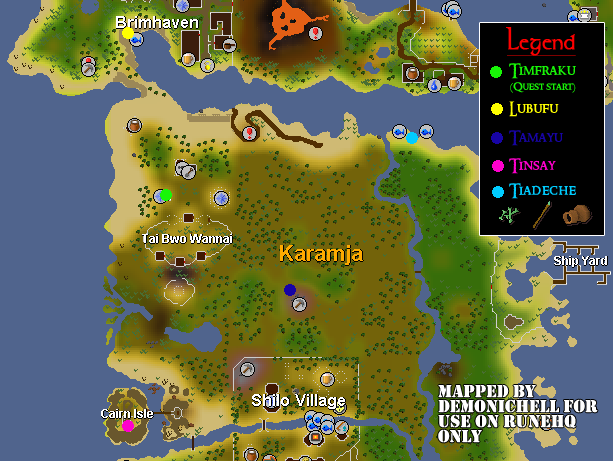
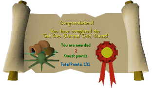

Tai Bwo Wannai Trio
Description: In Jungle Potion, the Shaman Trufitus communed with the gods to determine the fate of his people. Now Timfraku, the Chief of Tai Bwo Wannai, wishes to see his people and family return to the abandoned village. Help a depressed fisherman, encourage a raging hunter and satiate an eccentric priest in this extreme test of aptitude and patience!Difficulty: Medium
Length: Long
Required Quests:
- Jungle Potion
Items & Skills Needed:
- 30 Cooking
- 15 Agility
- 5 Fishing
Recommended:
- High level Agility and Herblore is a distinct advantage
- Level 65 Fishing to catch Karambwan
- Level 60 Cooking to cook Karambwan
- Must be able to kill level 48 Jogres
Reward: 2 Quest Points, 2k Coins, 5k Fishing and Cooking exp, 2.5k Attack and Strength exp;
When you talk to the three sons in their huts after the quest is finished, they will each give you the exp rewards plus some items.
One son gives you a Rune spear(kp) and the combat exp, another teaches you how to correctly cook marinated jogre bones and cooking exp, and the other teaches you how to cook/fish Karambwan and cooking/fishing exp.
Instructions:

Speak to Timfraku, even though he will be rather rude to you, try a few different options. He will tell you to leave. Speak with him again and tell him Trufitus sent you, and that he has communed with the gods. Timfraku will be amazed, and tells you to notify his three sons about it. Next click yes and start the quest.
Incidental information not needed for quest: Timfraku's three sons are named: Tamayu, Tiadeche, and Tinsay:
- Tamayu is the hunter and at age 3 he killed his first monkey.
- Tiadeche is the fisherman but is not too lucky since he needs to improve his technique.
- Tinsay is the priest who has acted very strangely since he had an accident with jogres.
Go and talk to Lubufu who is at the narrow causeway close to Brimhaven. Question him about his age and then offer to collect some bait for him.
Go and catch 20 Karambwaji fish that are south of the village and return to him so he will tell you about the Karambwan.
Go catch one Karambwan by using a Karambwanji fish with the vessel and cook it on the nearby range. (NOTE: If you are under 65 fishing and 60 cooking you can have a friend cook one for you, do NOT buy from Shrimp and Parrot Pub as those are not poisonous!).
Use the Karambwan with the Pestle and mortar. Finally use the cooked Karambwan paste with the spear. Your spear will now say (KP) at the end. Keep this for later to give to Tamayu.
Tamayu
Tamayu is southeast of the village by the mines. He refuses to come back to the village until he has killed the Shaikahan.
Watch as he tries to kill the Shaikahan, but he needs both a better spear and to be more agile to do it. Give him an Agility potion and the (KP) spear then one more agility potion so he can kill it.
After he has killed it he will agree to come back to the village.
Tinsay
Now go to Tinsay who is on Cairn Isle.
Bring a bottle of Karamja rum and a Banana. Speak to him and he says he wants some rum with bananas in it.
Use a Knife with the Banana to slice it and then use the slices with the rum. Give the banana-rum to him.
Next he will want a seaweed and monkey skin sandwich. Go kill a monkey using range or mage and take the monkey skin to Tamayu. He will agree to skin the monkey for you. Tamayu then hands you the monkey skin and some monkey bones.
Now use the skin with a Seaweed to get the seaweed sandwich. Give this rather disgusting thing to Tinsay.
Still not satisfied, he will then tell you that he wants some burnt jogre bones marinated in karambwaji.
Go kill a jogre and then use the bones with a furnace.
Next use the karambwaji with a pestle and mortar and then use that on the burnt jogre bones. CAUTION: Make sure you use this on a range because it will explode if used on a normal fire. You will get the marinated jogre bones.
Head back to Tinsay and he will agree to go to the village.
Tiadeche
Tiadeche is by the northeast edge of the southern part of the Karamjan continent, across the log bridge and then all the way north (beware the Jogres and the Shaikahan in this area).
Speak to him and ask what you can do to help. He will tell you something useful.
Use a Karambwanji with the Karambwan vessel, then use it with Tiadeche. He will then catch a Karambwan and give it you. He will then ask you to make a new vessel and give it to Tinsay. He also wants you to get the crafting instructions for himself.
Head back and talk to Lubufu. Tell him that your Karambwan vessel was stolen by a Karambwan. He then give you a new one.
Bring the new vessel back to Tinsay. He will give you the crafting manual Tiadeche needs.
Bring it to Tiadeche. He will finally agree to come back to the village.
Head back to Tai Bwo Wannai and speak to Timfraku.
Congratulations, Quest Complete!

This quest guide was written by Im4eversmart. Thanks to DRAVAN, Dracon, Brenden, alex200599, Headbiter, Demonichell, Agamemnus, Eq_S_Guy, and Ghoulies for corrections.
This quest guide was entered into the RuneHQ.com database on Tue, Sep 14, 2004, at 09:50:55 PM by DRAVAN and was last updated on Wed, Nov 02, 2005, at 08:56:14 PM by DRAVAN.